Anzeigen:
Spühl-Taschenfederkern-Klebeanlage (demontiert) 12 Positionen · 4 Stk. · 11 Satz Teile
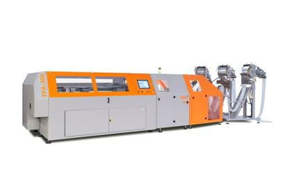
Beispielfoto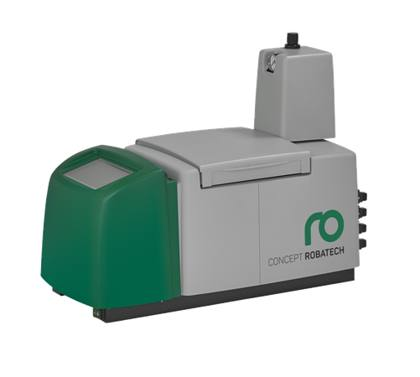
BeispielfotoHeißleim-Schmelzgerät (Robatech)
Heißleim-Schmelzgeräte Robatech
4 Einheiten gezählt; ein weiteres Robatech-Schmelzgerät ist bei den Komponenten der Anlage aufgeführt.
Geschätztes Gewicht ≈ 0,3–1,0 t
4 Stk.Ref #3
Federband-Abwickeleinrichtung
Federband-Abwickeleinrichtung
Klebeanlage (Taschenfederkern) – Federband-Abwickeleinrichtung
Wickelt die Taschenfederbänder ab und führt sie der Anlage zu.
Geschätztes Gewicht ≈ 0,5–1,5 t
1 Satz TeileRef #1
Schiebeeinheit (KSM)
Schiebeeinheit (KSM)
Klebeanlage (Taschenfederkern) – Schiebeeinheit KSM
Schiebt die Federreihen durch die Klebestation.
Geschätztes Gewicht ≈ 0,3–1,0 t
1 Satz TeileRef #2
Klebepresse
Klebepresse
Klebeanlage (Taschenfederkern) – Presse und Schutzverkleidungen
Presse der Anlage mit zugehörigen Schutzverkleidungen.
Geschätztes Gewicht ≈ 1,5–4,0 t
1 Satz TeileRef #4
Leimbrücken
Leimbrücken
Klebeanlage (Taschenfederkern) – Leimbrücken
Leimauftragsbrücken der Anlage.
Geschätztes Gewicht ≈ 0,5–1,5 t
1 Satz TeileRef #5
Portal mit Greifern
Portal mit Greifern
Klebeanlage (Taschenfederkern) – Portal mit Greifern
Überkopf-Handhabungseinheit mit Greifern.
Geschätztes Gewicht ≈ 0,8–2,0 t
1 Satz TeileRef #6
Beschickungskran (Spühl)
Beschickungskran (Spühl)
Klebeanlage (Taschenfederkern) – Beschickungskran Spühl
Spühl-Beschickungskran der Anlage.
Geschätztes Gewicht ≈ 0,5–1,5 t
1 Satz TeileRef #7
Förderer der Anlage
Förderer der Anlage
Klebeanlage (Taschenfederkern) – Förderer
Förderstrecken der Anlage.
Geschätztes Gewicht ≈ 0,5–2,0 t
1 Satz TeileRef #8
Schaltschränke
Schaltschränke
Klebeanlage (Taschenfederkern) – Schaltschränke
Elektrische Schaltschränke der Anlage.
Geschätztes Gewicht ≈ 0,3–0,8 t
1 Satz TeileRef #9
Bedienbühnen
Bedienbühnen
Klebeanlage (Taschenfederkern) – Bedienbühnen
Bedienbühnen und Laufstege.
Geschätztes Gewicht ≈ 0,5–1,5 t
1 Satz TeileRef #10
Schutzverkleidungen
Schutzverkleidungen
Klebeanlage (Taschenfederkern) – Schutzverkleidungen
Schutzverkleidungspaneele der Anlage.
Geschätztes Gewicht ≈ 0,3–1,0 t
1 Satz TeileRef #11
Sonstige Anlagenkomponenten
Sonstige Anlagenkomponenten
Klebeanlage (Taschenfederkern) – Komponenten
Weitere demontierte Komponenten der Anlage.
Geschätztes Gewicht ≈ 0,5–2,0 t
1 Satz TeileRef #12
Verpackungs- & Wickelmaschinen 5 Positionen · 4 Stk. · 2 Satz Teile
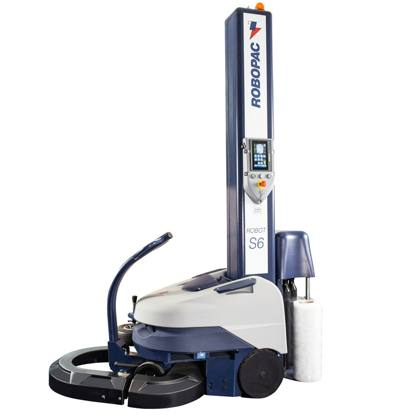
BeispielfotoPalettenwickelroboter (Robopac)
Palettenwickelroboter – Robopac FRD
Baujahr 09/2004 und 08/2005.
Geschätztes Gewicht ≈ 0,5–0,8 t
2 Stk.Ref #15
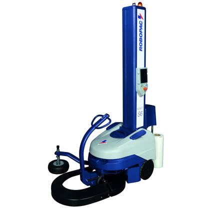
BeispielfotoPalettenwickelroboter (Robopac)
Palettenwickelroboter – Robopac S6
Baujahr 2018.
Geschätztes Gewicht ≈ 0,2–0,3 t
1 Stk.Ref #13
Palettenwickelroboter (Robopac)
Palettenwickelroboter – Robopac S6
Geschätztes Gewicht ≈ 0,2–0,3 t
1 Stk.Ref #14
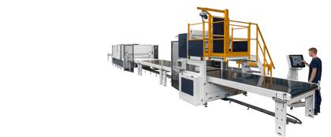
BeispielfotoFolienverpackungsmaschine (KUPER)
Verpackungsmaschine KUPER – Komponenten + Schaltschrank
Demontiert, mit zugehörigem Schaltschrank.
Geschätztes Gewicht ≈ 1,0–3,0 t
1 Satz TeileRef #16
Matratzenverpackungsmaschine (DESCO)
Matratzenverpackungsmaschine (DESCO)
Verpackungsmaschine DESCO – Komponenten
Demontiert; Modelldetails auf Anfrage.
Geschätztes Gewicht ≈ 1,0–3,0 t
1 Satz TeileRef #17
Schneid-, Prüf- & Handhabungsmaschinen 4 Positionen · 2 Stk. · 2 Satz Teile
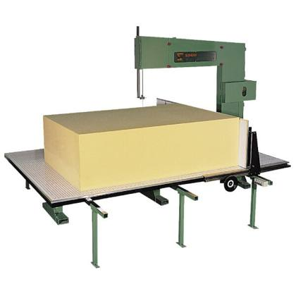
BeispielfotoSchaumstoff-Bandsäge
Bandsäge für Schaumstoff (Schaumstoffzuschnitt)
Einsatz: Zuschnitt von PU-Schaumstoffblöcken und -platten auf Matratzen- und Topper-Maße
Bauart: freistehende Bandsäge mit Endlos-Sägeband
Inventar: als vollständige Maschine geführt (nicht als Komponenten), 1 Stk.
Hersteller, Bauart (vertikal/horizontal), Schnitthöhe/-breite, Baujahr und Anschlusswerte: bei der Besichtigung bzw. auf Anfrage
Bauart: freistehende Bandsäge mit Endlos-Sägeband
Inventar: als vollständige Maschine geführt (nicht als Komponenten), 1 Stk.
Hersteller, Bauart (vertikal/horizontal), Schnitthöhe/-breite, Baujahr und Anschlusswerte: bei der Besichtigung bzw. auf Anfrage
Geschätztes Gewicht ≈ 0,4–1,5 t
1 Stk.Ref #18
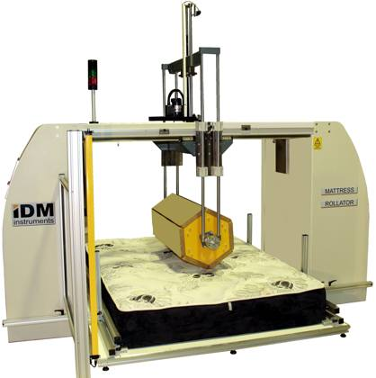
BeispielfotoMatratzen-Dauertestmaschine
Matratzen-Dauertestmaschine
Dauertest-Prüfstand für Matratzen (Lebensdauerprüfung).
Geschätztes Gewicht ≈ 0,5–1,5 t
1 Stk.Ref #19
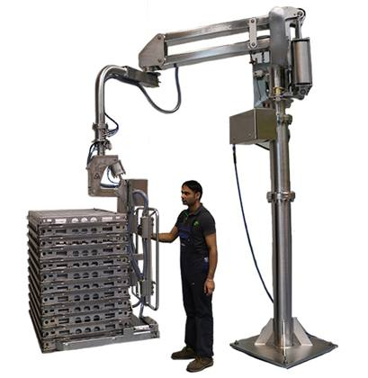
BeispielfotoHandhabungsmanipulator (SIGMA)
Manipulator SIGMA – Komponenten
Geschätztes Gewicht ≈ 0,3–1,0 t
1 Satz TeileRef #20
Maschine für Trikot (Strickstoff)
Maschine für Trikot (Strickstoff)
Maschine für Trikot (Strickstoff) – Komponenten
Maschine für Trikot (Strickstoff); demontiert.
Geschätztes Gewicht ≈ 0,3–1,5 t
1 Satz TeileRef #21
Näherei-Maschinen 3 Positionen · 32 Stk.
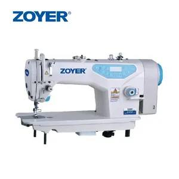
BeispielfotoSteppstich-Nähmaschine
Steppstich-Nähmaschine
Geschätztes Gewicht ≈ 0,9–1,7 t
19 Stk.Ref #22
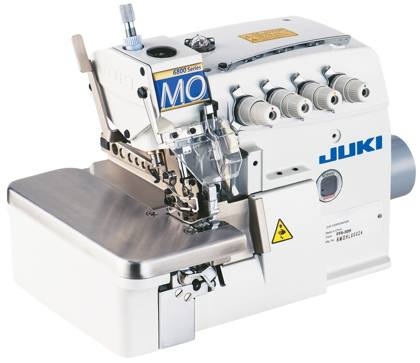
BeispielfotoOverlock-Nähmaschine
Overlock-Nähmaschine
Geschätztes Gewicht ≈ 0,4–0,7 t
9 Stk.Ref #23
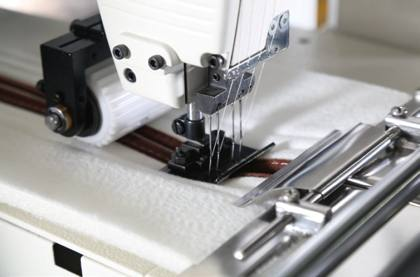
BeispielfotoAutomatische Band-/Reißverschlussmaschine
Automatische Band-/Reißverschlussmaschinen
Automatische Maschinen für Einfassungsbänder und Reißverschlüsse.
Geschätztes Gewicht ≈ 0,6–2,0 t
4 Stk.Ref #24
Förderer & Rollentische 5 Positionen · 95 Stk.
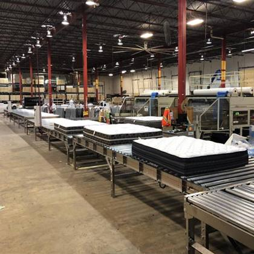
BeispielfotoGurtförderer für Matratzen
Gurtförderer für Matratzen
Geschätztes Gewicht ≈ 6–16 t
40 Stk.Ref #25
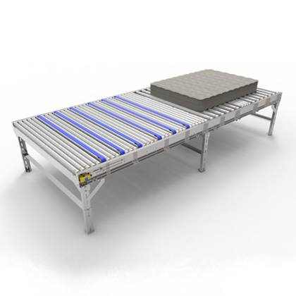
BeispielfotoRollenförderer für Matratzen
Rollenförderer für Matratzen
Geschätztes Gewicht ≈ 3,1–9,3 t
31 Stk.Ref #26
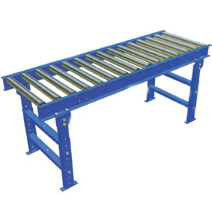
BeispielfotoRollentisch
Rollentische
Geschätztes Gewicht ≈ 0,8–2,5 t
17 Stk.Ref #27
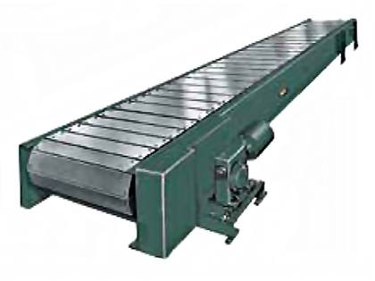
BeispielfotoPlattenbandförderer
Plattenbandförderer
Geschätztes Gewicht ≈ 0,5–2,0 t
1 Stk.Ref #29
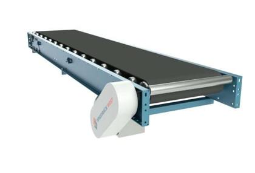
BeispielfotoGurtförderer aus der Näherei
Gurtförderer aus der Näherei – Komponenten
Förderstrecken aus der Näherei.
Geschätztes Gewicht ≈ 0,3–1,2 t
6 Stk.Ref #28
Inhaltsübersicht
Nach Vollständigkeit
| Status | Positionen | Anzahl (Stk.) | Anteil | Geschätztes Gewicht |
|---|---|---|---|---|
| Vollständige Einheit Freistehende Maschine oder Einheit, stückweise gezählt. | 13 | 131 | 95,6 % | ≈ 15–40 t |
| Demontiert – Komponenten In Komponenten demontierte Maschine; Verkauf wie vorgefunden, Teile nicht einzeln gezählt. | 16 | 6 + 15 Satz Teile | 4,4 % | ≈ 9–28 t |
| Gesamt | 29 | 137 + 15 Satz Teile | 100 % | ≈ 24–68 t |
Nach Produkttyp
| Produkttyp | Positionen | Anzahl (Stk.) | Anteil | Geschätztes Gewicht |
|---|---|---|---|---|
| Gurtförderer für Matratzen | 1 | 40 | 29,2 % | ≈ 6–16 t |
| Rollenförderer für Matratzen | 1 | 31 | 22,6 % | ≈ 3,1–9,3 t |
| Steppstich-Nähmaschine | 1 | 19 | 13,9 % | ≈ 0,9–1,7 t |
| Rollentisch | 1 | 17 | 12,4 % | ≈ 0,8–2,5 t |
| Overlock-Nähmaschine | 1 | 9 | 6,6 % | ≈ 0,4–0,7 t |
| Gurtförderer aus der Näherei | 1 | 6 | 4,4 % | ≈ 0,3–1,2 t |
| Heißleim-Schmelzgerät (Robatech) | 1 | 4 | 2,9 % | ≈ 0,3–1,0 t |
| Palettenwickelroboter (Robopac) | 3 | 4 | 2,9 % | ≈ 1,0–1,5 t |
| Automatische Band-/Reißverschlussmaschine | 1 | 4 | 2,9 % | ≈ 0,6–2,0 t |
| Schaumstoff-Bandsäge | 1 | 1 | 0,7 % | ≈ 0,4–1,5 t |
| Matratzen-Dauertestmaschine | 1 | 1 | 0,7 % | ≈ 0,5–1,5 t |
| Plattenbandförderer | 1 | 1 | 0,7 % | ≈ 0,5–2,0 t |
| Federband-Abwickeleinrichtung | 1 | 1 Satz Teile | – | ≈ 0,5–1,5 t |
| Schiebeeinheit (KSM) | 1 | 1 Satz Teile | – | ≈ 0,3–1,0 t |
| Klebepresse | 1 | 1 Satz Teile | – | ≈ 1,5–4,0 t |
| Leimbrücken | 1 | 1 Satz Teile | – | ≈ 0,5–1,5 t |
| Portal mit Greifern | 1 | 1 Satz Teile | – | ≈ 0,8–2,0 t |
| Beschickungskran (Spühl) | 1 | 1 Satz Teile | – | ≈ 0,5–1,5 t |
| Förderer der Anlage | 1 | 1 Satz Teile | – | ≈ 0,5–2,0 t |
| Schaltschränke | 1 | 1 Satz Teile | – | ≈ 0,3–0,8 t |
| Bedienbühnen | 1 | 1 Satz Teile | – | ≈ 0,5–1,5 t |
| Schutzverkleidungen | 1 | 1 Satz Teile | – | ≈ 0,3–1,0 t |
| Sonstige Anlagenkomponenten | 1 | 1 Satz Teile | – | ≈ 0,5–2,0 t |
| Folienverpackungsmaschine (KUPER) | 1 | 1 Satz Teile | – | ≈ 1,0–3,0 t |
| Matratzenverpackungsmaschine (DESCO) | 1 | 1 Satz Teile | – | ≈ 1,0–3,0 t |
| Handhabungsmanipulator (SIGMA) | 1 | 1 Satz Teile | – | ≈ 0,3–1,0 t |
| Maschine für Trikot (Strickstoff) | 1 | 1 Satz Teile | – | ≈ 0,3–1,5 t |
| Gesamt | 29 | 137 + 15 Satz Teile | 100 % | ≈ 24–68 t |
Nach Gruppe
| Gruppe | Positionen | Anzahl (Stk.) | Anteil | Geschätztes Gewicht |
|---|---|---|---|---|
| Spühl-Taschenfederkern-Klebeanlage (demontiert) | 12 | 4 + 11 Satz Teile | 2,9 % | ≈ 7–20 t |
| Verpackungs- & Wickelmaschinen | 5 | 4 + 2 Satz Teile | 2,9 % | ≈ 3,0–7,5 t |
| Schneid-, Prüf- & Handhabungsmaschinen | 4 | 2 + 2 Satz Teile | 1,5 % | ≈ 1,5–5,5 t |
| Näherei-Maschinen | 3 | 32 | 23,4 % | ≈ 1,9–4,4 t |
| Förderer & Rollentische | 5 | 95 | 69,3 % | ≈ 11–31 t |
| Gesamt | 29 | 137 + 15 Satz Teile | 100 % | ≈ 24–68 t |
Versandschätzung
| Gesamtvolumen (ca.) | ≈ 160–300 m³ |
| Gesamtgewicht (ca.) | ≈ 24–68 t |
| 40′ High-Cube-Container | 3–5 |
| 20′ Standard-Container | 6–11 |
Ungefähre Angaben: Die Gewichte je Position sind Schätzwerte, das Gesamtgewicht ist ihre Summe. Die Förderer und die demontierte Klebeanlage beanspruchen den Großteil des Volumens; schwere Anlagenteile (Presse, Portal, Kran) erfordern die Verladung per Kran/Gabelstapler und ggf. Open-Top- oder Flat-Rack-Container. Endgültige Werte nach Packliste vor Ort.
Genutzte Containerkapazität: 40′ HC ≈ 68 m³ / 26,5 t, 20′ ≈ 28 m³ / 24 t (praktische Beladung).
Genutzte Containerkapazität: 40′ HC ≈ 68 m³ / 26,5 t, 20′ ≈ 28 m³ / 24 t (praktische Beladung).